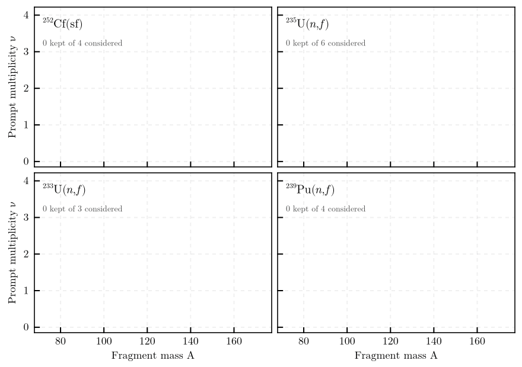

ExforFissionData
Retrieval of experimental fission observables from the IAEA EXFOR archive, as tabulated data files with a record of everything the query considered.
A query names a fissioning system — target charge, target mass and entrance channel — and the observable wanted as an abscissa and an ordinate. The package finds the datasets that answer it, reduces each to one row per abscissa value, and writes them beside a run record naming every dataset it kept or excluded, with the reason.

Prompt neutron multiplicity against fragment mass, one panel per fissioning system. Each frame advances through the datasets the archive offers for that query in the order the pipeline processes them; a dataset enters the axes only where its reaction code answers the query. Thirty datasets kept of 824 considered, with the run record naming the remainder and the reason each was left out.
using ExforFissionData
configuration = load_configuration("config/Cf252_sf_nu_vs_A.toml")
result = retrieve(configuration)
length(result.accepted), length(result.rejected)or from a shell,
julia scripts/retrieve.jl config/Cf252_sf_nu_vs_A.tomlObservables
A quantity has one name in a configuration and one symbol in a path, a file name and a column header.
| Abscissa | Symbol | Meaning |
|---|---|---|
mass, product_mass | A, A_p | pre- and post-neutron fragment mass |
charge | Z | fragment charge |
neutron_energy | E | secondary neutron energy |
total_kinetic_energy | TKE | total kinetic energy |
| Ordinate | Symbol | Meaning |
|---|---|---|
yield | Y | fission yield |
multiplicity, multiplicity_per_fission | nu, nu_bar | prompt neutron multiplicity, per fragment and per fragment pair |
fragment_kinetic_energy, product_kinetic_energy | E_K, E_K_p | pre- and post-neutron fragment kinetic energy |
total_kinetic_energy, post_neutron_total_kinetic_energy | TKE, TKE_p | pre- and post-neutron total kinetic energy |
neutron_kinetic_energy | eps | centre-of-mass neutron energy |
spectrum, spectrum_maxwellian_ratio | — | prompt fission neutron spectrum, absolute and as a ratio to a Maxwellian |
An abscissa is a list, because it is a joint index: ["mass"], or ["mass", "total_kinetic_energy"] for ν(A, TKE). The retrieval is written to data/<system>/<observable>/, where the system is an element symbol, a mass number and an entrance channel — Cf252_sf, U235_nth, U235_nres — and the observable is the ordinate, vs, then the abscissa symbols: nu_vs_A_TKE, Y_vs_A, spectrum_maxwellian_ratio_vs_E.
Not every combination exists in the archive. ν(TKE), for instance, is reported as a pair quantity, so multiplicity_per_fission against ["total_kinetic_energy"] returns data where multiplicity returns none.
What the package does not do
No normalisation is applied to ordinates. Normalisation conventions differ between consumers and cannot be undone once applied, so the unit token of each dataset is recorded instead. A query returning more than one unit token is flagged: such datasets must not be renormalised together.
No point is dropped on the basis of its value or uncertainty. Quality cuts belong with the project that can justify them. Values in the far-asymmetric mass tails are statistically poor and are written unchanged, with their uncertainties.
The uncertainty column is omitted when no row of a dataset carries one, rather than written as a column of zeros.
Fragment and prompt-neutron observables only. Prompt-γ quantities, the multiplicity distribution P(ν), and the centre-of-mass spectrum Φ(ε) are outside the observable set; the last the archive does not carry as a quantity of its own.
Spectra between two fissioning systems — the ratio form the archive holds a good deal of — are a distinct observable and are excluded. A spectrum as a ratio to a Maxwellian is not: that is spectrum_maxwellian_ratio.
Relative data is retrieved but kept apart. A prompt fission neutron spectrum is conventionally measured relative and normalised afterwards, so most of what the archive holds for ²³⁵U(n,f) is in arbitrary units. Those datasets are written under relative/ rather than beside the absolute ones, because a relative dataset cannot be put on a common scale with anything — not even another relative dataset. Each must be normalised on its own, and none may be averaged with absolute data. A reader that takes a whole directory therefore cannot pick one up by accident, and the run record marks every accepted dataset relative = true or false.
Arbitrary units remain fatal for every other ordinate, where a relative value is not an interpretable quantity.
Conventions applied
Energies are restated in MeV — both an energy abscissa and an ordinate that is itself an energy. These are exact conversions of a value with the factor recorded in the run record, which is a different thing from a normalisation.
A written file holds one row per abscissa value. Several things put more than one row on a value, and they are not handled alike:
| Cause | Treatment |
|---|---|
| several incident energies | the configured window selects rows; a dataset still holding more than one energy inside it is rejected rather than averaged |
| another independent variable the rendering declares | rejected where it varies; one held at a single value is a condition of the measurement and passes |
| isomeric states | the archive's own total where it gives one, otherwise the resolved states summed with uncertainties in quadrature |
| anything left | inverse-variance weighted mean, uncertainty $1/\sqrt{\sum 1/\sigma^2}$, counted per dataset and named in a warning |
What is left is not only repetition. The op=csv rendering reports a mass as an integer, so a dataset tabulated on a non-integer mass scale arrives truncated and its neighbouring points collapse onto one mass number; and it drops independent variables it does not recognise, so a grid over one of them arrives as unexplained repeats. The run record names every dataset in which rows were combined, and the subentry stored beside the data settles which case it is.
Selection
Datasets are chosen by substring tests over the EXFOR reaction code, for instance 92-U-233(N,F)ELEM/MASS,CUM,FY. The archive applies its own vocabulary inconsistently, so the tables in reaction_codes.jl are empirical: they encode observed failures of the upstream labelling rather than a formal grammar.
Three checks are worth naming because they are easy to get wrong:
- the
y:Valuecolumn marks upper limits with aMax(prefix — those rows are bounds, not measurements; - it also marks arbitrary units as
ARB-UNITS, which carry no scale; - the incident-energy window applies per row, not to the dataset as a whole, since one product is frequently reported at several energies;
- a variable the rendering declares in
indVarsand the abscissa does not hold must not vary — a mass yield at nine kinetic-energy gates is nine yields per mass number; yieldrequires theFYtag itself, since the quantity codeFYalso files the most probable charge against mass,MASS,PAR,ZP, which every mass rule admits.
Reaction-code qualifiers that bear on a value's scale — MSC, REL, CHN, DERIV, FCT — and those naming the inducing neutron spectrum are recorded per dataset rather than used to reject it.
Retrieval
Requests run under bounded concurrency with a per-request timeout and exponential backoff, and every response is cached on disk, so a re-run costs the archive nothing. The cache does not follow the archive, which revises entries and adds new ones; refresh = true under [retrieval] refetches what a run touches and replaces the cached copies. Datasets are processed and written in identifier order, so a re-run over unchanged responses reproduces its output exactly.
API
ExforFissionData.ExforFissionDataExforFissionData.ABSCISSAEExforFissionData.ABSCISSA_FAMILYExforFissionData.ABSCISSA_TOKENExforFissionData.BASE_FORBIDExforFissionData.CHANNELSExforFissionData.CHANNEL_REACTIONExforFissionData.ELEMENT_SYMBOLSExforFissionData.ENERGY_ORDINATESExforFissionData.EV_TO_MEVExforFissionData.EXFOR_BASEExforFissionData.EXFOR_HEADERExforFissionData.INCIDENT_ENERGY_FAMILYExforFissionData.MAXIMUM_CHARGEExforFissionData.MAXIMUM_FRAGMENT_MASSExforFissionData.MAXIMUM_TARGET_MASSExforFissionData.MEASUREMENT_KINDSExforFissionData.MINIMUM_FRAGMENT_MASSExforFissionData.ORDINATESExforFissionData.ORDINATE_ENERGY_FACTORSExforFissionData.ORDINATE_QUANTITYExforFissionData.ORDINATE_TOKENExforFissionData.QUANTITIESExforFissionData.REACTIONSExforFissionData.RELATIVE_SCALE_ORDINATESExforFissionData.SCALE_QUALIFIERSExforFissionData.SECTIONSExforFissionData.SPECTRUM_QUALIFIERSExforFissionData.UNSCALED_UNITSExforFissionData.USER_AGENTExforFissionData.VARIABLE_FAMILIESExforFissionData.AcceptedDatasetExforFissionData.ConfigurationExforFissionData.DatasetExforFissionData.LayoutErrorExforFissionData.QueryExforFissionData.ReducedDatasetExforFissionData.RejectionExforFissionData.RetrievalOptionsExforFissionData.RetrievalResultExforFissionData.TagRuleExforFissionData.cache_directoryExforFissionData.code_qualifiersExforFissionData.combine_measurementsExforFissionData.dataset_csvExforFissionData.dataset_identifiersExforFissionData.dataset_stemExforFissionData.declared_variablesExforFissionData.element_symbolExforFissionData.has_absolute_scaleExforFissionData.is_measurementExforFissionData.is_relative_unitExforFissionData.is_usable_responseExforFissionData.load_configurationExforFissionData.map_boundedExforFissionData.matchesExforFissionData.observable_labelExforFissionData.parse_datasetExforFissionData.parse_value_kindExforFissionData.reduce_datasetExforFissionData.rejection_reasonExforFissionData.requestExforFissionData.resolve_isomersExforFissionData.retrieveExforFissionData.select_datasetExforFissionData.subentry_textExforFissionData.system_labelExforFissionData.tag_ruleExforFissionData.target_symbolExforFissionData.tolerates_relative_scaleExforFissionData.uncertainty_columnExforFissionData.unused_pathExforFissionData.validate_headerExforFissionData.varying_variablesExforFissionData.write_datasetExforFissionData.write_metadata
ExforFissionData.ExforFissionData — Module
ExforFissionDataRetrieval of experimental fission observables from the IAEA EXFOR archive.
A query names a fissioning system — target charge, target mass and entrance channel — and the observable wanted as an abscissa and an ordinate: Y(A), ν(A), TKE(A), ⟨E_K'⟩(A'), the prompt fission neutron spectrum, and the rest of the set in ABSCISSAE and ORDINATES. The package selects the datasets that answer it, reduces each to one row per abscissa value, and writes them as space-separated tables with a record of everything it considered.
Selection is by substring tests over the EXFOR reaction code. The archive applies its own vocabulary inconsistently, so the tag tables in src/reaction_codes.jl are empirical: they encode observed failures of the upstream labelling rather than a formal grammar.
What the package deliberately does not do: it applies no normalisation to ordinates and drops no point on the basis of its value or uncertainty. Normalisation conventions differ between consumers and cannot be undone once applied, so the unit token of each dataset is recorded instead; quality cuts belong with the project that can justify them.
Entry points
configuration = load_configuration("config/U233_nth_Y_vs_A.toml")
result = retrieve(configuration)or from a shell,
julia scripts/retrieve.jl config/U233_nth_Y_vs_A.tomlExforFissionData.ABSCISSAE — Constant
Abscissae this package can retrieve, each a list of quantities, in configuration vocabulary.
ExforFissionData.ABSCISSA_FAMILY — Constant
The independent-variable family of VARIABLE_FAMILIES each abscissa quantity is read from: the reaction product for a mass or a charge, the secondary energy for an energy.
ExforFissionData.ABSCISSA_TOKEN — Constant
The ASCII symbol of each abscissa quantity, as the literature writes it.
The configuration spells a quantity out, so that a file a user edits explains itself; a path and a column header carry the symbol, which is the field's own nomenclature and what every other file in this toolchain uses. nu_vs_A_TKE says what multiplicity_vs_mass_total_kinetic_energy says, and a directory listing stays readable.
ExforFissionData.BASE_FORBID — Constant
Tags rejected for every observable.
| Tag | Excludes |
|---|---|
RECOM | recommended or evaluated values, not a measurement |
TER | ternary fission |
RAT | a ratio rather than the quantity itself |
,G | a gamma-related channel |
-G- | a ground-state-resolved product in the code's product field |
)/(, )//( | a ratio of two reaction codes, in either form |
DEL | delayed rather than prompt emission |
CUM | cumulative rather than independent yield |
RAW | uncorrected data |
CHN (chain yields) and REL (relative data) appear in this list commented out. Excluding them removes datasets that are wanted, so they are admitted deliberately; they remain visible here because that is a real decision rather than an oversight, and both are recorded per dataset through SCALE_QUALIFIERS.
ExforFissionData.CHANNELS — Constant
Entrance channels this package can retrieve, in configuration vocabulary.
ExforFissionData.CHANNEL_REACTION — Constant
The EXFOR reaction code each entrance channel is queried under.
The channel names the fissioning system — Cf252_sf, U235_nth, U235_nres — and decides the reaction code, which is why the configuration carries the channel and not the code: the two can disagree only if both are written down. Which datasets a neutron-induced channel actually admits is settled by the incident-energy window, not by the channel; the channel has to agree with that window, and naming a system is what it is for.
ExforFissionData.ELEMENT_SYMBOLS — Constant
Chemical symbols indexed by atomic number, Z = 1 to 118.
Written as one string in periodic-table order, ten to a row, because a table that can be read across is a table whose entries can be checked; indexing by Z is what the code needs and is what splitting it gives.
ExforFissionData.ENERGY_ORDINATES — Constant
Ordinates whose value is itself an energy, and which are therefore restated in MeV.
spectrum and spectrum_maxwellian_ratio are excluded: the first is a density in energy and the second is already dimensionless.
ExforFissionData.EV_TO_MEV — Constant
Conversion from the electronvolts EXFOR reports energies in to the megaelectronvolts fission observables are quoted in. Exact by definition, applied to energy abscissae and to the incident-energy window, and recorded in the run metadata.
Ordinate normalisation is deliberately not applied: the unit token is recorded instead and the consumer renormalises, because the conventions differ between consumers and a normalisation applied here cannot be undone.
ExforFissionData.EXFOR_BASE — Constant
Base URL of the IAEA EXFOR web interface.
ExforFissionData.EXFOR_HEADER — Constant
The header of the op=csv&plus=2 rendering, in order, exactly as the service returns it.
Recorded from x4get?DatasetID=10433002&op=csv&plus=2 and re-verified 2026-09-13. A response whose header differs from this is rejected by validate_header.
ExforFissionData.INCIDENT_ENERGY_FAMILY — Constant
The family of VARIABLE_FAMILIES that holds the incident energy.
ExforFissionData.MAXIMUM_CHARGE — Constant
Largest atomic number ELEMENT_SYMBOLS covers.
ExforFissionData.MAXIMUM_FRAGMENT_MASS — Constant
Largest plausible bare mass number of a fission fragment.
ExforFissionData.MAXIMUM_TARGET_MASS — Constant
Largest plausible mass number of a fissioning target.
ExforFissionData.MEASUREMENT_KINDS — Constant
Datum kinds appearing in the y:Value column, mapped to whether the row is a measurement.
EXFOR marks upper and lower limits with a prefix on this column. Such rows carry a bound rather than a measured value; treating them as data reports a limit as though it were a result.
ExforFissionData.MINIMUM_FRAGMENT_MASS — Constant
Smallest plausible bare mass number of a fission fragment.
ExforFissionData.ORDINATES — Constant
Ordinates this package can retrieve, in configuration vocabulary.
ExforFissionData.ORDINATE_ENERGY_FACTORS — Constant
Factors converting an energy-valued ordinate to MeV, keyed by the unit token EXFOR reports.
Applied to ordinates that are an energy — fragment and total kinetic energies, and centre-of-mass neutron energies. This is an exact unit conversion with a recorded factor, not a normalisation: the quantity is unchanged and the factor is written into the run record. Energy densities such as a spectrum are deliberately absent, since converting one rescales a distribution rather than restating a value.
ExforFissionData.ORDINATE_QUANTITY — Constant
The EXFOR quantity code each ordinate belongs to.
The quantity selects which datasets the archive offers at all; the tag rule then chooses among them. Several ordinates impose few tags of their own and rely on the abscissa rule, so an ordinate paired with the wrong quantity silently admits a different observable: asking for yield under NU returns prompt multiplicities, and under E returns kinetic energies, both written as though they were yields. The configuration therefore names the ordinate alone and the quantity is read from here, which is a pairing that cannot be got wrong.
ExforFissionData.ORDINATE_TOKEN — Constant
The ASCII symbol of each ordinate quantity; see ABSCISSA_TOKEN.
A quantity appearing in both vocabularies — the total kinetic energy, which is an abscissa of a yield and an ordinate against mass — carries the same symbol in both.
ExforFissionData.QUANTITIES — Constant
EXFOR quantity codes within the scope of this package.
ExforFissionData.REACTIONS — Constant
Reaction codes within the scope of this package: neutron-induced and spontaneous fission.
ExforFissionData.RELATIVE_SCALE_ORDINATES — Constant
Ordinates for which a measurement in arbitrary units is a standard, interpretable form.
A prompt fission neutron spectrum is conventionally measured relative and normalised afterwards, and the published comparisons are ratios to a Maxwellian in which only the shape carries the physics. Excluding relative spectra therefore removes most of what the archive holds: of the 125 datasets it offers for 235-U(n,f) under MFQ, 42 answer the spectrum query in arbitrary units against 15 in absolute ones. A thermal incident-energy window narrows both, to 11 and 6.
Every other ordinate is excluded from this, because a relative value there is not a form anyone can interpret — a kinetic energy in arbitrary units is not an energy, and a multiplicity is a count per fragment whose scale is the whole quantity.
A relative dataset cannot be put on a common scale with any other, not even another relative one, so retrieve writes these to their own directory rather than beside absolute data.
ExforFissionData.SCALE_QUALIFIERS — Constant
Reaction-code qualifiers that bear on whether a value is on an absolute, directly comparable scale, mapped to what each means.
None of these causes a dataset to be rejected — several are admitted deliberately. They are recorded per dataset in the run record so that a consumer renormalising a directory of files knows which of them are not on the same footing, rather than having to re-read the reaction codes to find out.
ExforFissionData.SECTIONS — Constant
Sections a configuration may hold, and the keys of each. Anything else is refused.
ExforFissionData.SPECTRUM_QUALIFIERS — Constant
Reaction-code qualifiers naming the neutron spectrum that induced fission.
Recorded for the same reason: a thermal and a fission-spectrum-averaged measurement of the same quantity are different numbers.
ExforFissionData.UNSCALED_UNITS — Constant
Unit tokens of the y:Value column that carry no absolute scale.
ARB-UNITS is arbitrary; a dataset in arbitrary units cannot be combined with, or normalised against, one in absolute units. NO-DIM is dimensionless — correct for ratios and for already normalised distributions, and therefore not rejected, but recorded so that a consumer never renormalises a mixture of tokens as though it were homogeneous.
ExforFissionData.USER_AGENT — Constant
Value of the User-Agent header sent with every request.
Identifying the client is the courtesy owed a shared public service: it lets whoever runs the archive see what its automated traffic actually is, and gives them somebody to contact if a client misbehaves. The version is read from the project file, so a report names something that can be looked up rather than "some Julia script".
ExforFissionData.VARIABLE_FAMILIES — Constant
The independent-variable families of the csv rendering, keyed by the digit under which the indVars column names them, each with its heading and the column holding its value.
indVars = 237 says a dataset is tabulated against incident energy, secondary energy and product. It is the rendering's own statement of what varies, and the only one: the reaction code names the quantity, not the grid it was measured on.
ExforFissionData.AcceptedDataset — Type
AcceptedDatasetOne dataset that survived selection, with its reduction and the file it was written to.
Fields
dataset::Dataset: what the archive returned, after unit, tag and energy selection.reduced::ReducedDataset: the projection onto the requested abscissa, one row per value.file::String: the written file, relative to the retrieval directory. Datasets in arbitrary units are written underrelative/rather than beside the absolute data; seeis_relative_unit.
ExforFissionData.Configuration — Type
ConfigurationA validated retrieval configuration.
Fields
query::Query: what to retrieve.retrieval::RetrievalOptions: transport settings.save_subentries::Bool: whether to store the original EXFOR subentry text beside the data.output_directory::String: root for retrieved data.significant_digits::Int: significant digits in tabulated output.record_hostname::Bool: whether to name the machine in the run record.source::String: path of the configuration file; the run record carries its file name.
ExforFissionData.Dataset — Type
DatasetOne EXFOR dataset, parsed and accepted for a query.
Fields
identifier::String: the EXFOR dataset identifier.year::Int: publication year of the entry.author::String: first author, as EXFOR records them, with the+for "et al." removed.reaction_code::String: the full EXFOR reaction code the selection matched.unit::String: the unit token of they:Valuecolumn, e.g."PART/FIS".table::DataFrame: the rows retained after unit, tag and incident-energy selection.
ExforFissionData.LayoutError — Type
LayoutError(message)A response whose header is not EXFOR_HEADER.
A type of its own because the two ways it arises need telling apart. One dataset failing the contract is an anomaly of that dataset — the archive renders a few with no columns at all — and is recorded as a rejection. Every dataset failing it is the rendering having changed, and retrieve stops rather than report an archive with nothing in it.
ExforFissionData.Query — Type
QueryWhat to retrieve: a fissioning system, an observable, and the incident-energy window.
Fields
target_Z::Int,target_A::Int: charge and mass numbers of the fissioning target.channel::String: entrance channel, one ofCHANNELS.reaction::String: EXFOR reaction code parameter, fromCHANNEL_REACTION.quantity::String: EXFOR quantity code, fromORDINATE_QUANTITY.abscissa::Vector{String}: the quantities the observable is tabulated against, one ofABSCISSAE.ordinate::String: one ofORDINATES.energy_min::Float64,energy_max::Float64: incident-energy window in MeV. Ignored for spontaneous fission, which has no incident particle.spontaneous::Bool: derived fromchannel.
ExforFissionData.ReducedDataset — Type
ReducedDatasetAn observable tabulated against its abscissa, reduced from one dataset.
Fields
abscissa_columns::Vector{Symbol}: abscissa column names, one per quantity of the abscissa.ordinate_column::Symbol: the ordinate column name.table::DataFrame: the abscissa columns, then the ordinate, then its uncertainty. Every column is named for the quantity it holds, the uncertainty as<ordinate>_uncertainty, so that a frame read out of this type says what it carries without the file name to explain it.has_uncertainties::Bool: whether any row carries a non-zero uncertainty. When false the uncertainty column is omitted on export rather than written as a column of zeros.diagnostics::Dict{String,Any}: what the reduction had to do — isomer totals used, isomer sums taken, ambiguous groups, duplicates combined, distinct incident energies retained.
ExforFissionData.Rejection — Type
RejectionA dataset excluded from a query, with the reason.
Fields
identifier::String: the EXFOR dataset identifier.reaction_code::String: the reaction code, where one could be read; empty otherwise.reason::String: why the dataset was excluded.
ExforFissionData.RetrievalOptions — Type
RetrievalOptions(; kwargs...)Transport settings for EXFOR retrieval.
Fields
concurrency::Int = 4: simultaneous in-flight requests.timeout::Float64 = 60.0: per-request timeout in seconds.retries::Int = 4: retry attempts after a failed request.backoff::Float64 = 1.0: base of the exponential backoff in seconds; attemptkwaitsbackoff · 2^(k-1).use_cache::Bool = true: read and write the on-disk response cache.refresh::Bool = false: refetch every response and replace the cached copy, which is how a cache is brought up to date with entries the archive has revised or added since.cache_directory::String: where responses are cached; defaults to aScratch.jlspace, which keeps the cache out of the package tree and out of any project directory.
ExforFissionData.RetrievalResult — Type
RetrievalResultWhat a retrieval produced.
Fields
directory::String: where the data was written.accepted::Vector{AcceptedDataset}: datasets written, in dataset-identifier order.rejected::Vector{Rejection}: datasets excluded, each with its reason.metadata_file::String: path of the run record.
Reaching a written value goes through AcceptedDataset and ReducedDataset — both exported, since they are part of this result rather than internals:
entry = first(result.accepted)
entry.dataset.identifier, entry.dataset.unit # provenance and scale
entry.reduced.table, entry.reduced.ordinate_column # the rows as writtenExforFissionData.TagRule — Type
TagRule(require_all, require_any, forbid)A substring test over an EXFOR reaction code.
A code matches when it contains every tag of require_all, at least one tag of require_any (when that list is non-empty), and none of forbid.
Fields
require_all::Vector{String}: tags that must all be present.require_any::Vector{String}: tags of which at least one must be present; an empty list imposes no constraint.forbid::Vector{String}: tags of which none may be present.
ExforFissionData.cache_directory — Method
cache_directory(options) -> StringThe directory backing the response cache, created if absent.
Falls back to a Scratch.jl scratch space when options.cache_directory is empty.
ExforFissionData.code_qualifiers — Method
code_qualifiers(code) -> Vector{String}The qualifiers of SCALE_QUALIFIERS and SPECTRUM_QUALIFIERS present in a reaction code, each with its meaning, for the run record.
ExforFissionData.combine_measurements — Method
combine_measurements(values, uncertainties) -> (value, uncertainty, imputed)Combine repeat measurements of one quantity by an inverse-variance weighted mean.
Points with a positive uncertainty carry weight 1/σ². Points quoting none carry no information about their own weight; rather than discarding them they are given the median of the positive weights, and the number so treated is returned as imputed. The median is what a point of unknown precision is worth among its neighbours: it neither privileges such a point nor throws away the measurement. Where no point quotes an uncertainty the result is the unweighted mean with a zero uncertainty, which marks a point as unweighted rather than as perfectly measured.
The combined uncertainty is 1/sqrt(Σ w), the uncertainty of the weighted mean.
ExforFissionData.dataset_csv — Method
dataset_csv(identifier, options) -> StringThe op=csv&plus=2 rendering of one dataset.
ExforFissionData.dataset_identifiers — Method
dataset_identifiers(target, reaction, quantity, options) -> Vector{String}Identifiers of every EXFOR dataset matching a target, reaction and quantity.
target is an EXFOR nuclide symbol such as "U-233", reaction is "n,f" or "0,f", and quantity is an EXFOR quantity code such as "FY" or "NU". The identifiers are returned sorted, so that everything downstream is independent of the order the service happens to use.
Example
julia> identifiers = dataset_identifiers("U-233", "n,f", "FY", RetrievalOptions());ExforFissionData.dataset_stem — Method
dataset_stem(dataset) -> StringThe file stem of one dataset: identifier, first author and year, e.g. "21685003_A.Goeoek_2014". The accession leads back to the measurement; the author and year are what a figure legend keys on.
ExforFissionData.declared_variables — Method
declared_variables(table) -> Vector{Int}The independent-variable families the rendering declares for a dataset, read from its indVars column as the digits of VARIABLE_FAMILIES; empty when the column is blank.
ExforFissionData.element_symbol — Method
element_symbol(Z) -> StringThe chemical symbol of the element of atomic number Z.
Throws an ArgumentError outside 1 to 118.
Example
julia> element_symbol(98)
"Cf"ExforFissionData.has_absolute_scale — Method
has_absolute_scale(token) -> BoolWhether a y:Value token carries a usable scale, i.e. is not in arbitrary units.
ExforFissionData.is_measurement — Method
is_measurement(token) -> BoolWhether a y:Value token marks a measured datum rather than a limit.
ExforFissionData.is_relative_unit — Method
is_relative_unit(unit) -> BoolWhether a unit token denotes an arbitrary rather than an absolute scale.
Takes the unit alone, as recorded on a Dataset — "ARB-UNITS", not "Data(ARB-UNITS)". has_absolute_scale takes the whole y:Value token including its wrapper and would read a bare unit as the kind, reporting any of them as absolute.
ExforFissionData.is_usable_response — Method
is_usable_response(body) -> BoolWhether a response body is worth parsing or keeping.
The archive answers some requests with HTTP 200 and a short application-level message instead of data, and a transient failure can yield an empty body under the same status. Neither is a response to cache: an entry is otherwise fetched at most once, so storing one silently removes that dataset from every later run.
ExforFissionData.load_configuration — Method
load_configuration(path) -> ConfigurationRead and validate a retrieval configuration.
Throws an ArgumentError naming the offending key when a value is missing, of the wrong type, outside its documented range, or not among its documented choices, and when a section or a key is not one the loader knows — a misspelt optional key would otherwise fall back to its default without a word. The abscissa and ordinate are additionally checked to form an expressible combination whose symbols stay distinct.
Example
julia> configuration = load_configuration("config/U233_nth_Y_vs_A.toml");ExforFissionData.map_bounded — Method
map_bounded(f, items, options) -> VectorApply f to each element of items with at most options.concurrency tasks in flight.
Results are returned in the order of items, never in completion order, so that a run is reproducible regardless of how the network behaves. An exception in any task propagates once every task has been awaited.
ExforFissionData.matches — Method
matches(rule, code) -> BoolWhether an EXFOR reaction code satisfies rule.
ExforFissionData.observable_label — Method
observable_label(query) -> StringThe observable as one token, e.g. "nu_vs_A", "nu_vs_A_TKE", "spectrum_maxwellian_ratio_vs_E".
The ordinate, vs, then the abscissa quantities, all as the ASCII symbols of ORDINATE_TOKEN and ABSCISSA_TOKEN. It names the directory one retrieval is written to, under the directory of its system.
ExforFissionData.parse_dataset — Method
parse_dataset(identifier, body) -> DataFrameParse the csv rendering of one dataset, validating the column layout.
Throws a LayoutError naming the dataset when the header does not match EXFOR_HEADER, and an ArgumentError when the archive returned no data at all — which is a different failure and must not be reported as a changed layout.
ExforFissionData.parse_value_kind — Method
parse_value_kind(token) -> (kind, unit)Split a y:Value token such as "Data(PART/FIS)" into its datum kind and unit.
Returns ("Data", "PART/FIS"). A token without parentheses yields an empty unit. Used to reject limits and arbitrary units, and to record the unit of every accepted dataset.
Example
julia> ExforFissionData.parse_value_kind("Max(NO-DIM)")
("Max", "NO-DIM")ExforFissionData.reduce_dataset — Method
reduce_dataset(dataset, query) -> ReducedDatasetProject one accepted dataset onto its abscissa and resolve every source of duplication.
Isomeric states are resolved per nuclide and incident energy, then any abscissa value still carrying several measurements is combined by combine_measurements. The result has one row per abscissa value, which is the contract the written files keep.
Energy abscissae are converted from the electronvolts EXFOR reports to megaelectronvolts, and so is an ordinate that is itself an energy — see ENERGY_ORDINATES. Both are exact conversions of a value with the factor recorded. No normalisation is ever applied: that convention differs between consumers and cannot be undone, so the unit token is recorded instead.
ExforFissionData.rejection_reason — Method
rejection_reason(rule, code) -> Union{String,Nothing}The tag that caused code to fail rule, or nothing when it matches.
Used to record why a dataset was excluded, so that an exclusion can be audited rather than merely observed.
ExforFissionData.request — Method
request(query, options) -> StringRetrieve query relative to EXFOR_BASE, through the cache when enabled.
Retries on transport failures and on server errors with exponential backoff; a 4xx response is not retried, since it will not succeed on repetition. Throws the final exception when every attempt fails.
ExforFissionData.resolve_isomers — Method
resolve_isomers(rows) -> (value, uncertainty, outcome)Reduce the rows reporting one nuclide at one incident energy to a single value.
EXFOR may give the ground state, its isomers, and their total. The total is the row whose ProdM field is absent; where it is present it is preferred, since it is the archive's own sum. Where it is absent the resolved states are summed with their uncertainties in quadrature.
outcome is :total, :summed, :single, or :ambiguous — the last when several rows carry no isomer marking and therefore cannot be told apart. Each of them is a total in its own right, so they are combined as repeats and the dataset is flagged; rows resolving a state are parts of those totals and are left out, since a mean of a part with the whole measures neither.
ExforFissionData.retrieve — Method
retrieve(configuration; root) -> RetrievalResultRun one retrieval end to end.
Dataset identifiers are fetched for the configured target, reaction and quantity; each dataset is retrieved, parsed against the recorded column layout, and either accepted or rejected with a reason; accepted datasets are projected onto the abscissa, reduced to one row per abscissa value, and written. A run record naming every dataset considered is written beside the data.
Data is written to <root>/<output.directory>/<system>/<observable>/ — one directory per fissioning system, one subdirectory per observable, one file per measurement.
Datasets are processed in identifier order and written in identifier order, so a re-run over an unchanged archive reproduces the output byte for byte. Nothing is overwritten: a retrieval landing on an existing directory writes beside it under a suffixed name.
Example
julia> result = retrieve(load_configuration("config/U233_nth_Y_vs_A.toml"));
julia> length(result.accepted), length(result.rejected)ExforFissionData.select_dataset — Method
select_dataset(identifier, body, query) -> Union{Dataset,Rejection}Decide whether one retrieved dataset answers query, and reduce it to the rows that do.
Selection proceeds in the order below, and the first failure is reported:
- the dataset is non-empty and carries a reaction code;
- the
y:Valuecolumn marks measurements rather than limits, and is not in arbitrary units; - the reaction code satisfies the composed tag rule of the abscissa and ordinate;
- for induced fission, at least one row lies within the configured incident-energy window — and only those rows are retained — and the retained rows share one incident energy;
- no independent variable the rendering declares, other than the abscissa's own, varies over the retained rows; see
varying_variables; - the product identification is consistent with the abscissa: present and mass-coded for the fragment-mass abscissae, present and charge-coded for the charge abscissae, and absent for the energy abscissae.
Step 4 is a row filter rather than a whole-dataset test. An EXFOR dataset frequently reports the same product at several incident energies; admitting all of them and combining them later would average an excitation function into a single number. For the same reason a window that still holds several energies of one dataset rejects it: the rows are different measurements, and the rejection names the energies so that the window can be narrowed to the one wanted.
ExforFissionData.subentry_text — Method
subentry_text(identifier, options) -> StringThe original EXFOR subentry text of one dataset, retained beside the extracted data so that every written file can be traced to the archive record it came from.
ExforFissionData.system_label — Method
system_label(query) -> StringThe fissioning system as one token, e.g. "Cf252_sf", "U235_nth", "U235_nres".
Element symbol, mass number and entrance channel. It names the directory a system's data is written under, and a consumer keys its stored data on it, so it must stay stable as long as the system does — which is why the energy window, which varies between runs of one system, is not in it and the channel is.
ExforFissionData.tag_rule — Method
tag_rule(abscissa, ordinate) -> TagRuleCompose the selection rule for an observable from its abscissa and ordinate rules.
abscissa is the list of quantities the observable is tabulated against — ["mass"], or ["mass", "total_kinetic_energy"] for a joint index.
The requirements of both are taken together and the forbidden tags of both are added to BASE_FORBID. When both contribute a require_any list the observable is not expressible, since the two alternatives cannot be imposed independently by substring tests; that combination is rejected by the configuration validator rather than silently mis-selected.
Example
julia> rule = ExforFissionData.tag_rule(["mass"], "multiplicity");
julia> ExforFissionData.matches(rule, "98-CF-252(0,F)MASS,PR,FRG,NU")
trueExforFissionData.target_symbol — Method
target_symbol(query) -> StringThe EXFOR nuclide symbol of the fissioning target, e.g. "Cf-252".
Formed from target_Z and target_A rather than written into the configuration, so that the symbol and the numbers beside it cannot disagree.
ExforFissionData.tolerates_relative_scale — Method
tolerates_relative_scale(ordinate) -> BoolWhether ordinate admits datasets in arbitrary units; see RELATIVE_SCALE_ORDINATES.
ExforFissionData.uncertainty_column — Method
uncertainty_column(ordinate_column) -> SymbolThe name of the column holding the uncertainty of ordinate_column.
One spelling and one position throughout the toolchain: the quantity's own name suffixed with _uncertainty, immediately after the quantity it belongs to.
ExforFissionData.unused_path — Method
unused_path(path) -> Stringpath if nothing exists there, otherwise path with the smallest numeric suffix that is free.
ExforFissionData.validate_header — Method
validate_header(header, source) -> NothingCheck a retrieved CSV header against EXFOR_HEADER.
Throws a LayoutError naming source and the first disagreeing column. Every column accessor in this package is positional, so a shifted layout would otherwise corrupt output silently rather than fail.
ExforFissionData.varying_variables — Method
varying_variables(table, abscissa) -> Vector{String}The declared independent variables that abscissa does not account for and that take more than one value over table, each as its heading and the number of values.
Projecting a dataset onto an abscissa asserts that nothing else varies. A variable held at one value is a condition of the measurement and leaves the projection meaningful; one that varies makes every abscissa value a family of rows, and no combination of them is the observable asked for — a mean over kinetic-energy gates is not a mass yield. The incident energy is left to the window and to the check that follows it.
ExforFissionData.write_dataset — Method
write_dataset(path, reduced; significant_digits) -> NothingWrite one reduced dataset as a space-separated table with a single header line.
Values are rounded to significant_digits significant digits, which is scale-invariant: a fixed number of decimals would keep a multiplicity of order 1 and destroy a spectrum of order 1e-7.
The uncertainty column is written only when at least one row carries one; a dataset quoting none yields a two-column file, which a reader accepts and which is honest about what the archive holds. Line endings are \n.
The header names the abscissa columns, then the ordinate, then its uncertainty — for example A nu nu_uncertainty, or Z A_p Y Y_uncertainty for a joint abscissa. Every name is the ASCII symbol of the quantity the column holds, so no column has to be identified from the file name. A reader is expected to take columns by position: the header names what is there, and renaming a quantity must not be able to break anything that reads these files.
ExforFissionData.write_metadata — Method
write_metadata(path, configuration, accepted, rejected) -> NothingWrite the run record: the query, the transport settings, the package revision, the platform, and every dataset considered — those written, with what the reduction had to do to them, and those excluded, with the reason.
The rejection list is the point of this file. A dataset missing from the output is otherwise indistinguishable from one the archive does not hold.